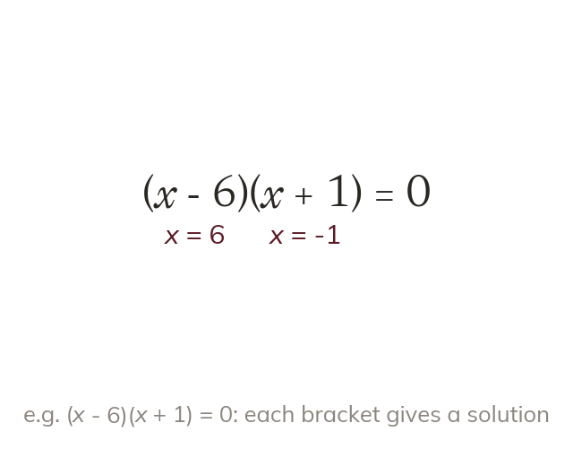

Zero needs a zero factor
If a product is zero, one of its factors is zero. So each bracket is set equal to zero in turn.
When two numbers multiply to make zero, at least one of them must be zero. So a product of brackets equal to zero is solved by setting each bracket equal to zero in turn.